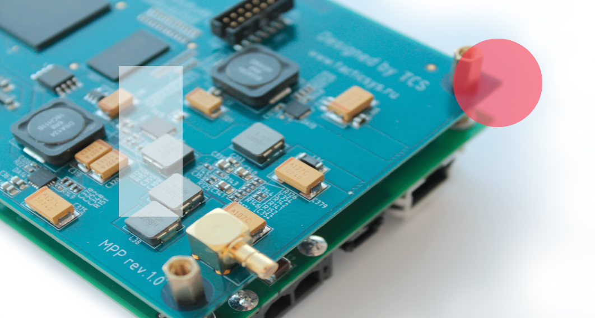

Программно-аппаратная
платформа для построения
беспроводных средств связи
на базе технологии SDR

inside
Texas instruments
multicore
TMS320C6674
chip
Texas instruments
multicore
TMS320C6674
chip

qubik
миниатбрный
одноплатный компьютер
в индустриальном исполнении
на базе TI AM1808
миниатбрный
одноплатный компьютер
в индустриальном исполнении
на базе TI AM1808
| Процессор | Память | Интерфейсы | Питание |
| AM1808 375MHz | LPDDR SDRAM 128Mb, SPI FLASH 8 Mb |
802.11 b/g/n, RJ45, USB2.0, miniUSB, RS232, miniSD card, LCD 40 pin |
5V DC 3.6 Li-Ion |
| 1высокое качество изготовления |
2контроль заряда аккумулятора |
3индустриальный температурный диапазон |
4техническая поддержка |

Software Defined Radio
технология построения устройств радиосвязи с
программируемыми параметрами
системы, которая включает в себя широкий круг методов проектирования, позволяющих
сформировать по-настоящему гибкую систему связи. Проще говоря, это система радиосвязи,
в которой компоненты, обычно реализованные в оборудовании на аппаратном уровне
(например, фильтры, модуляторы / демодуляторы, детекторы), в случае с
SDR — выполнены на программном уровне.
системы, которая включает в себя широкий круг методов проектирования, позволяющих
сформировать по-настоящему гибкую систему связи. Проще говоря, это система радиосвязи,
в которой компоненты, обычно реализованные в оборудовании на аппаратном уровне
(например, фильтры, модуляторы / демодуляторы, детекторы), в случае с
SDR — выполнены на программном уровне.
Cognitive Radio
передовая технология на пути к более рациональному использованию радиочастотного спектра.
Особенностью когнитивного радио является способность получать и передавать сигналы на различных частотах,
в зависимости от загруженности частотного спектра. В целом, это «интеллектуальное» радио,
которое проводит анализ электромагнитной среды и находит для передачи временно или постоянно
не используемые частоты, в зависимости от региона, что позволяет увеличивать количество передаваемой
на каждой данной частоте информации.
В полной мере, все преимущества этой технологии воплотил новый стандарт 802.22.
В 2007 году когнитивное радио заняло четвертое место в бюллетене Technology Review,
издаваемом Массачусетским технологическим институтом, опубликованого перечня десяти перспективных
технологий, которые могут оказать наибольшее влияние на
человеческое общество.
Особенностью когнитивного радио является способность получать и передавать сигналы на различных частотах,
в зависимости от загруженности частотного спектра. В целом, это «интеллектуальное» радио,
которое проводит анализ электромагнитной среды и находит для передачи временно или постоянно
не используемые частоты, в зависимости от региона, что позволяет увеличивать количество передаваемой
на каждой данной частоте информации.
В полной мере, все преимущества этой технологии воплотил новый стандарт 802.22.
В 2007 году когнитивное радио заняло четвертое место в бюллетене Technology Review,
издаваемом Массачусетским технологическим институтом, опубликованого перечня десяти перспективных
технологий, которые могут оказать наибольшее влияние на
человеческое общество.


Маркетинг
Системы видеонаблюдения и конференц-связи
Радиолокационные станции, комплексы постановки
радиопомех, комплексы радиомониторинга и пеленгации
Цифровое телевидение и радио
Считыватели радиочастотной идентификации
Обучающие платформы для образовательных учреждений
Беспроводная связь
Радиолокационные станции, комплексы постановки
радиопомех, комплексы радиомониторинга и пеленгации
Цифровое телевидение и радио
Считыватели радиочастотной идентификации
Обучающие платформы для образовательных учреждений
Беспроводная связь
Команда
Александр Кондратьев
Руководитель проекта, менеджер продукта
Александр Кузнецов
Архитектор алгоритмов цифровой обработки сигналов, DSP программист
Ярослав Шишов
Системный архитектор беспроводных средств связи, инженер-схемотехник
Павел Беляков
Инженер-разрабочик алгоритмов ЦОС, FPGA дизайнер
Иван Елкин
Инженер-схемотехник, конструктор